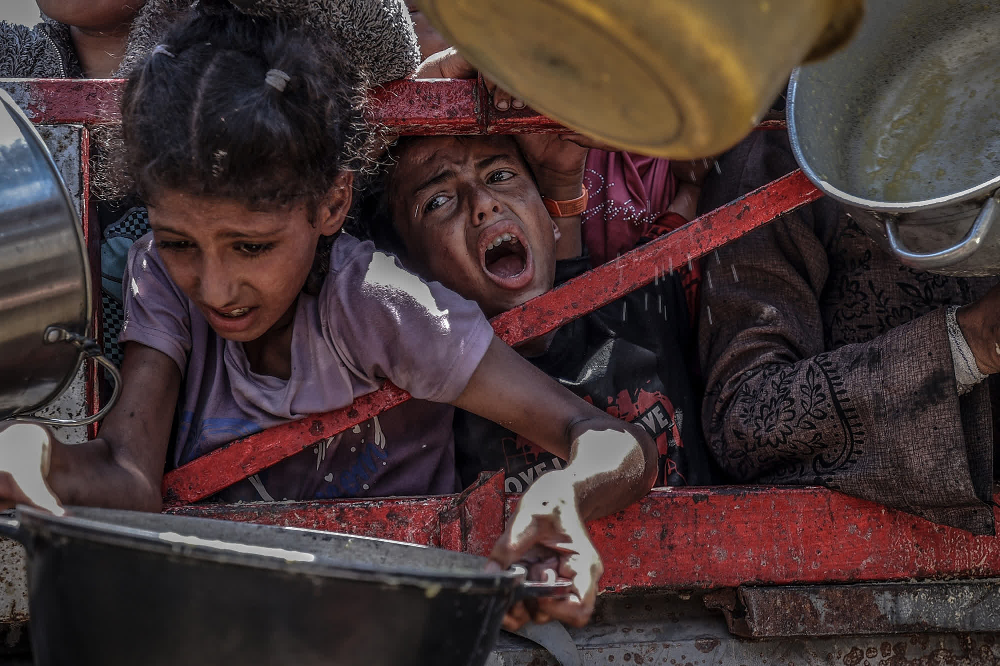
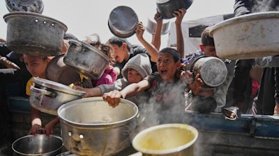
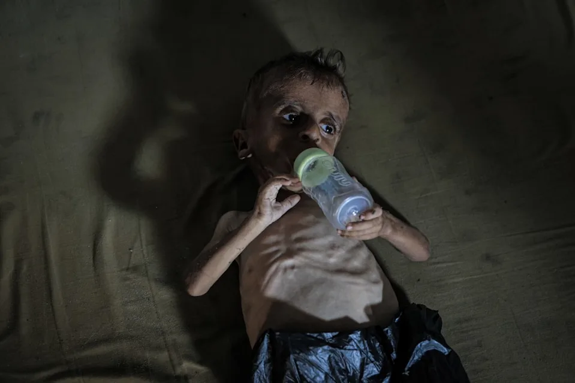
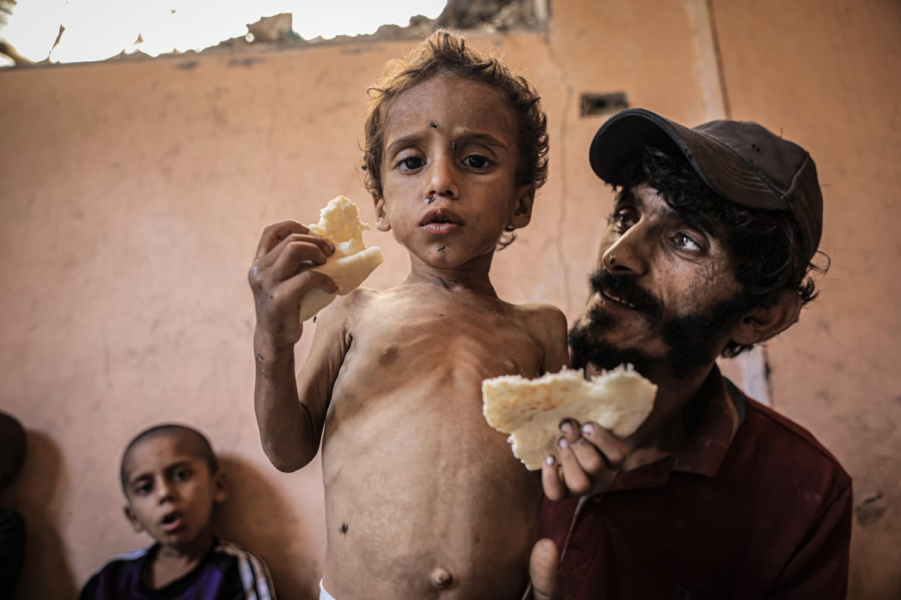

Families in Gaza are facing catastrophic food insecurity. Mothers watch their children starve. You have the power to change that — right now, from wherever you are.
While you read this, a child in Gaza is crying from hunger. Not metaphorically. Right now. These are real people — our Muslim brothers and sisters — living through the unimaginable.

Children screaming for a single meal
This is what famine looks like. Children crushed against barriers, crying, fighting for whatever scraps of food exist. This is happening right now.

Hundreds fight for one pot of soup
When a food distribution point opens, hundreds descend within minutes. There is never enough.

Infants starving to death
This baby's body is consuming itself. Without food reaching Gaza, children like this will not survive.
"I have not eaten in three days. My children cry at night. I have nothing left to give them."— A mother in Gaza, documented by international humanitarian workers
You are sitting somewhere warm and safe. You have food in your home. They have nothing.
I Will Not Look Away — Donate NowSources: UN OCHA, World Food Programme, UNRWA humanitarian reports
Words and images only go so far. Watch the footage that the world cannot ignore.
Gaza is experiencing one of the most severe humanitarian crises in recorded modern history. Prolonged conflict has devastated every piece of infrastructure — roads, hospitals, bakeries, water systems — and left two million people trapped with nothing to eat.
Mothers are feeding their children grass. Fathers are drinking contaminated water because it is all that exists. Infants are dying of starvation-related causes in hospitals that have no medicine, no electricity, and no food. International aid organizations have formally declared famine conditions.
The children dying in Gaza today are dying the slowest, most painful death imaginable. Starvation is not quick. It is weeks of agony — a child's body consuming itself, organ by organ, until there is nothing left.
As Muslims, we are bound by our faith to respond. The Prophet ﷺ told us we are one body. Right now, that body is screaming in pain. What will you do?
Feed a Starving Family Now
The following cases are drawn from documented humanitarian field reports by UNRWA, UNICEF, and the World Food Programme.
A boy admitted to hospital weighing 9.2 kg. The healthy weight for a child his age is 16 kg. His body had begun consuming its own muscle tissue. Doctors described his condition as severe acute malnutrition with medical complications.
An infant girl brought to a field clinic by her mother, who had not eaten in four days to preserve what little food remained for her children. The infant's weight had dropped to 3.8 kg — below her birth weight. She was placed on emergency nutrition intervention.
She had boiled grass and mixed it with water to give her children something to eat. She told me she hadn't slept in three nights because the sound of her children crying from hunger kept her awake. She asked me only one thing — can you help them?
— Field worker testimony, humanitarian agency, Gaza City
Feeding the poor isn't merely encouraged in Islam — it is a pillar of our faith, repeated throughout the Quran and the Sunnah of our beloved Prophet ﷺ.
He is not a believer whose stomach is filled while his neighbor goes to sleep hungry.Prophet Muhammad ﷺAl-Adab Al-Mufrad
The Muslim Ummah is like one body — when one part is in pain, the whole body feels it.Prophet Muhammad ﷺSahih Muslim
Charity does not decrease wealth. No one forgives another except that Allah increases his honour.Prophet Muhammad ﷺSahih Muslim
The people of Gaza are among those whom Zakat was ordained to help. Your Zakat is an obligation — your Sadaqah is an investment in Jannah. Both are accepted and both will reach those who need it most. Make your intention, give with sincerity, and trust in Allah's promise of multiplied reward.
Zakat is one of the five pillars of Islam — 2.5% of your total zakatable wealth held above the nisab threshold for one lunar year. If you have been putting off calculating it, do it now. The people of Gaza are among those it was ordained to help.
$565 USD — the minimum wealth threshold for Zakat to be obligatory. Verify current rates with your local scholar.
Enter your assets below. All values in USD.
This pre-fills the donation amount for you
We believe in full transparency. Here is how your donation reaches a family in Gaza.
Give securely online. Choose your amount — every dollar counts, no matter how small.
Funds are routed through verified local partners operating on the ground in Gaza.
Food packages — grains, lentils, oil, canned goods — are delivered directly to families.
Receive reports on how your donation was used. Know your sadaqah reached its destination.
Every dollar is tracked. We publish full spending reports so you always know where your money went.
We operate in active crisis zones. Your donation reaches families within days, not months.
All operations are Shariah-compliant. Your Zakat, Sadaqah, and Fidya are accepted and handled properly.
Administrative costs are covered separately. Your donation goes entirely to feeding families.
Get updates on your donation's impact delivered to your inbox. See the families you're helping.
Your donation keeps giving — ongoing reward in your book of deeds, even after you are gone.
We know you have questions. Here are honest answers to the ones we hear most.
Yes. The families in Gaza fall squarely under the categories of Fuqara (the poor) and Masakeen (the needy) as defined in Quran 9:60 — the primary recipients of Zakat. We are committed to ensuring Zakat funds are used only for direct food aid and not mixed with general operational costs. Make your intention before donating and select "Zakat" in the donation type field.
100% of your donation goes to food aid. Our operational and administrative costs are covered through separate funding. When you donate $50, $50 worth of food reaches a family in Gaza. No exceptions.
We operate on an emergency response model. Funds are transferred to our partners within 48 hours of receiving your donation. Depending on access conditions, food typically reaches families within 3–7 days. In active crisis areas we maintain pre-positioned food stocks so distribution can begin within hours of a fund transfer.
Yes, you can cancel at any time with no questions asked. That said, we encourage you to consider what monthly giving means for a family that relies on it. When a regular food supply stops, it is not an inconvenience — it is a crisis for that family. If you are facing financial hardship yourself, please reach out and we will pause your giving rather than cancel it.
Sadaqah Jariyah is a continuous charity whose reward keeps flowing to you after you give — and even after you pass away. The Prophet ﷺ said: "When a person dies, all their deeds end except three: a continuing charity, beneficial knowledge, or a righteous child who prays for them." (Sahih Muslim). A monthly donation that consistently feeds a family qualifies as a form of ongoing Sadaqah Jariyah. Your reward does not stop when the month ends.
Yes. Donating Sadaqah on behalf of a deceased loved one is a well-established practice in Islam. Make your niyyah (intention) before donating, specifying that the reward should go to them. The scholars are agreed that the reward reaches the deceased and they benefit from it in the next life. Select "Sadaqah" as your donation type and make your intention sincerely.
FeedGaza was started by a group of ordinary Muslims — not politicians, not celebrities, not large institutions. Just people sitting at home, watching the news, and feeling the unbearable weight of doing nothing.
We are your neighbours, your colleagues, your fellow worshippers at the masjid. We saw what was happening in Gaza and we asked ourselves the same question the Prophet ﷺ would ask of us: "What did you do when you had the ability to help?"
So we built this. Not because we are experts. Not because we have all the answers. But because sitting quietly was no longer something we could do in good conscience. We are accountable to Allah for every dollar donated to us — and we take that seriously.
"The believers are but brothers."— Quran 49:10
"Saving the life of a single human being is as if you have saved all of humanity. The people of Gaza are human beings — our brothers and sisters in faith — and their lives are in our hands."
"When you give for the sake of Allah, you do not lose anything. Allah is Al-Razzaq, the Provider. He will replace what you give and multiply it in ways you cannot imagine."
"The orphan, the widow, the hungry child — they are all amanah (trust) in our hands. On the Day of Judgement, we will be asked what we did when we had the ability to help."
Before you give, make your niyyah (intention). Is this Zakat, Sadaqah, or a general donation? Allah sees your heart — and your reward is with Him.
اللَّهُمَّ اجْعَلْ هَذَا صَدَقَةً خَالِصَةً لِوَجْهِكَ الْكَرِيم
"O Allah, make this a sincere charity for Your Noble Face."
$50 every month feeds an entire family — grains, lentils, oil, and canned protein delivered to their door. This is the most impactful thing you can do for a family that has absolutely nothing.
Choose your donation amount:
Secure 256-bit SSL encrypted donation
Your name could be on this wall. Join hundreds of Muslims giving right now.
Add My Name — Donate Now"O Allah, bless our wealth and make it a means of our salvation."
Right now, as you read this, a child in Gaza is crying from hunger. Not figuratively. Literally. A real child, your Muslim brother or sister, whose parents cannot feed them. That child's du'a is going up to Allah. You may be the answer to that prayer.
On Yawm al-Qiyamah, Allah will ask: "You saw them suffering. You had the means. What did you do?" You still have a chance to answer that question the right way. Don't leave this page without giving. Even $10 feeds a child for a week.
Yes — I Will Feed a Family Now